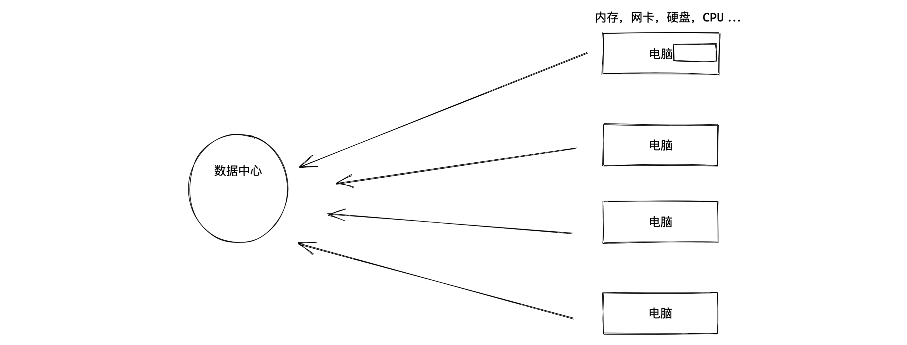
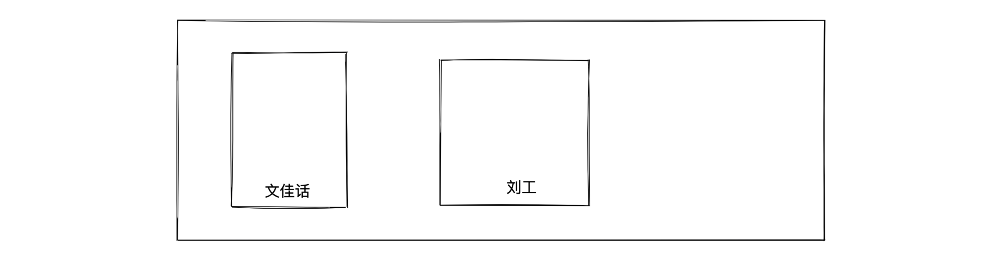
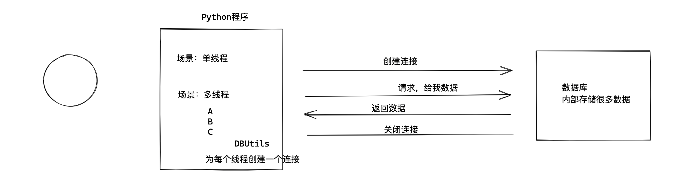
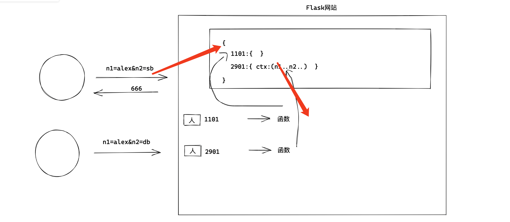
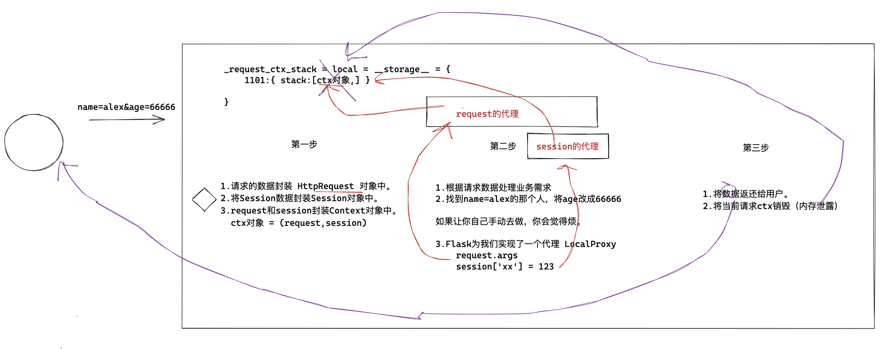
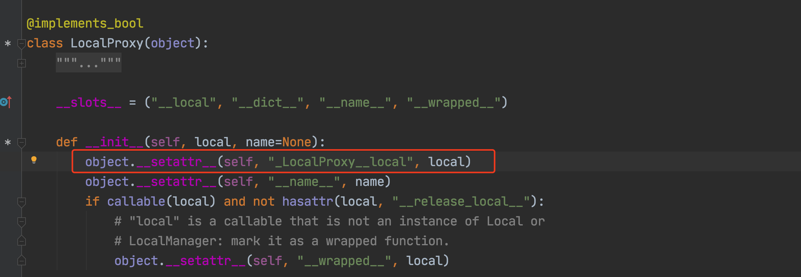
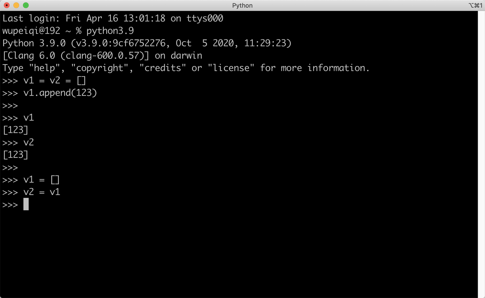
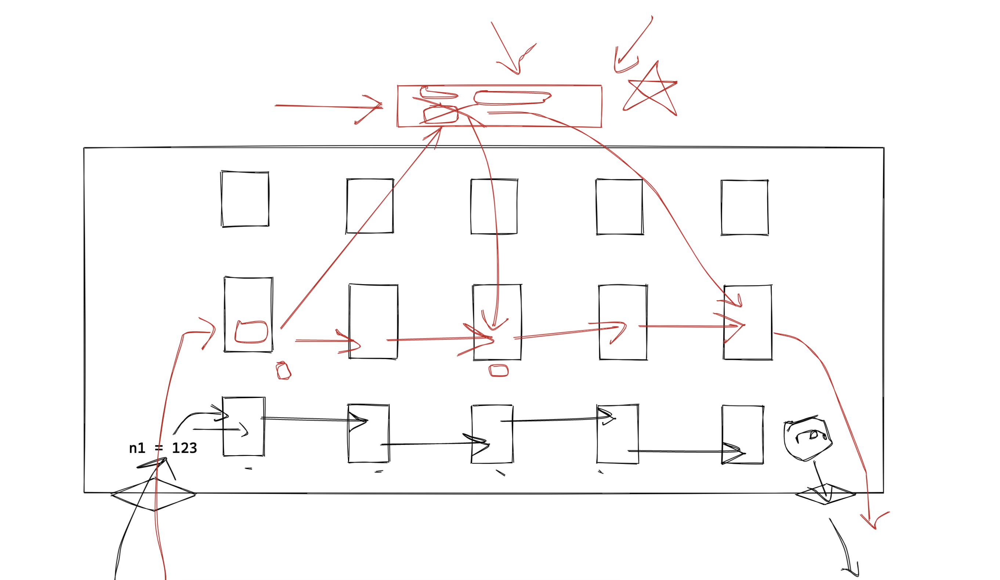
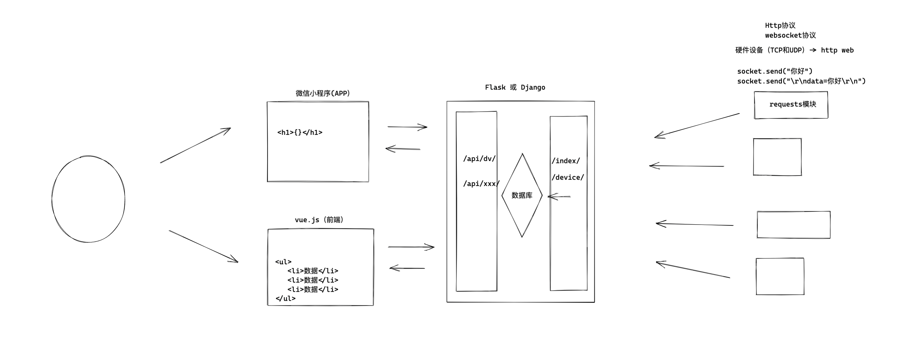

day05 面向对象¶
加强班，实战 & 源码。
今日概要：知识点 & 源码
- 接口 & 抽象 & 异常
- 数据封装，打包。
- 数据
线程隔离 - 栈 &
线程隔离 - 偏函数 和 代理（面向对象）
- Web框架Flask（上下文管理机制）
- 元类（wtform & django admin）
- 简单用面向对象去实现一些业务。【录播课目标】
- 用框架去实现。【别致的用户】
- 探究源码。【元类】
1. 接口 & 抽象 & 异常¶
1.1 接口（Python不支持）¶
接口，给我一个URL，让我通过URL可以访问你的平台（第三方的API）。
接口，面向对象中的数据类型（Python中没有 ，Java & C# ）。
其他语言中接口的作用。
# 定义了一个接口，接口名字 IMessage；接口中定义了 f1 和 f2方法。
# 注意：接口中定义的方法不能用具体的代码实现。
interface IMessage(object):
def f1(self):
pass
def f2(self):
pass
意义何在？
- 约束，如果某个类继承(实现)了接口，那么再找个类中必须去定义接口中的f1和f2方法。
- 泛型，泛指多个类型（“继承”了他的类型）。实现
interface IMessage(object):
def f1(self):
pass
def f2(self):
pass
class Wechat(IMessage):
def f1(self):
print('666')
def f2(self):
print('999')
class Email(IMessage):
def f1(self):
print('111')
def f2(self):
print('222')
def func(IMessage a1):
pass
obj1 = Wechat()
func(obj1)
obj2 = Email()
func(obj2)
1.2 抽象类和抽象方法¶
1. Java中的逻辑¶
# 定义了一个接口，接口名字 IMessage；接口中定义了 f1 和 f2方法。
# 注意：接口中定义的方法不能用具体的代码实现。
interface IMessage(object):
def f1(self):
pass
def f2(self):
pass
class Foo1(IMessage):
pass
class Foo2(IMessage):
pass
# 定了一个抽象类 abstract【接口 + 继承】
class abstract Message(object):
# 在抽象类中定义抽象方法
def abstract f1(self):
pass
# 在抽象类中定义抽象方法
def abstract f2(self):
pass
def f3(self):
print("公共功能")
class Foo1(Message):
def f1(self):
print("具体的功能 ")
def f2(self):
print("具体的功能 ")
obj = Foo1()
obj.f1()
obj.f2()
obj.f3()
2. Python实现¶
import abc
# 定义了一个抽象类
class Base(object, metaclass=abc.ABCMeta):
@abc.abstractmethod
def do(self):
""" 抽象方法 """
pass
def func(self):
""" 绑定方法 """
print(123)
# 不合法，在python中运行不报错 （Java中定义时就报错）。
class Foo(Base):
def do(self):
print(123)
# TypeError: Can't instantiate abstract class Foo with abstract method do
obj = Foo()
obj.do()
obj.func()
在Python中2中也支持。
import abc
# 定义了一个抽象类
class Base(object):
__metaclass__ = abc.ABCMeta
@abc.abstractmethod
def do(self):
""" 抽象方法 """
pass
def func(self):
print(123)
想象，让大家去实现发送短信/微信/邮件的功能。
import abc
class Message(object, metaclass=abc.ABCMeta):
""" 以后让所有发送消息的类，都继承Message """
@abc.abstractmethod
def send(self):
""" 发送消息 """
pass
class WechatMessage(Message):
def send(self):
print("发送微信")
class DingDingMessage(Message):
def send(self):
print("发送钉钉")
class EmailMessage(Message):
def send(self):
print("发送邮件")
优点：统一规范。
Python开发过程中很少用 抽象类+抽象方法 的方式做上述统一规范的事。
1.3 异常处理¶
class Message(object):
""" 以后让所有发送消息的类，都继承Message """
def send(self):
""" 发送消息 """
# 抛出异常
raise NotImplementedError()
class WechatMessage(Message):
def send(self):
print("发送微信")
class DingDingMessage(Message):
def send(self):
print("发送钉钉")
obj = DingDingMessage()
obj.send()
实战案例¶
- 手写案例
- 反射实现工厂模式
- 异常做了约束
- 实战案例（CMDB资产管理）

- 源码内部
class BaseThrottle:
"""
Rate throttling of requests.
"""
def allow_request(self, request, view):
"""
Return `True` if the request should be allowed, `False` otherwise.
"""
raise NotImplementedError('.allow_request() must be overridden')
def get_ident(self, request):
"""
Identify the machine making the request by parsing HTTP_X_FORWARDED_FOR
if present and number of proxies is > 0. If not use all of
HTTP_X_FORWARDED_FOR if it is available, if not use REMOTE_ADDR.
"""
xff = request.META.get('HTTP_X_FORWARDED_FOR')
remote_addr = request.META.get('REMOTE_ADDR')
num_proxies = api_settings.NUM_PROXIES
if num_proxies is not None:
if num_proxies == 0 or xff is None:
return remote_addr
addrs = xff.split(',')
client_addr = addrs[-min(num_proxies, len(addrs))]
return client_addr.strip()
return ''.join(xff.split()) if xff else remote_addr
def wait(self):
"""
Optionally, return a recommended number of seconds to wait before
the next request.
"""
return None
用户访问频率限制。
class MyThrottle(BaseThrottle):
def allow_request(self, request, view):
# 用户IP进行评率限制， 89.98
# 注册用户， 用户名
ip = self.get_ident() # 获取用户IP
2. 数据封装¶
def do():
""" 下载图片，可能失败，也可能成功。如果失败，返回错误信息；如果成功，则返回保存到本地的路径"""
info = {"status":None, "message":"", "data":None}
pass # 代码具体的实现逻辑
return info
def run():
ret = do()
# {"status":None, "message":"", "data":None}
if ret['status']:
pass
else:
pass
if __name__ == '__main__':
run()
class Response(object):
def __init__(self, status=False, error=None, data=None):
"""
封装响应数据
:param status: 状态
:param error: 错误信息
:param data: 数据
"""
self.status = status
self.error = error
self.data = data
@property
def dict(self):
return self.__dict__
def do():
""" 下载图片，可能失败，也可能成功。如果失败，返回错误信息；如果成功，则返回保存到本地的路径"""
info = Response()
try:
info.status = True
info.data = [11, 22, 33]
except Exception as e:
info.error = str(e)
return info
def run():
ret = do() # 对象类型
print(ret.status)
print(ret.data)
print(ret.dict) # 字典
if __name__ == '__main__':
run()
3. 数据隔离¶

import time
import threading
class Foo(object):
pass
obj = Foo() # 内存 {num:10}
# 函数=任务
def task(index):
obj.num = index
time.sleep(2) # 线程1停住；线程2停住；.... 线程10
message = "当前线程是{}，内部读取num等于{}".format(index, obj.num) # 10
print(message)
# 创建了10个线程（类似于创建了10个人，每个人都执行一次task任务）
for i in range(1, 11): # 1、2、3、4、5..10
t = threading.Thread(target=task, args=(i,))
t.start()
threding.local对象，让线程之间进行数据隔离。
import time
import threading
"""
{
1190:{num:1},
1888:{num:2}
...
9000:{num:10}
}
"""
obj = threading.local() # 为线程进行隔离。
# 函数=任务
def task(index):
obj.num = index # 在内部读取线程ID
time.sleep(2) # 线程1停住；线程2停住；.... 线程10
message = "当前线程是{}，内部读取num等于{}".format(index, obj.num) # 1
print(message)
# 创建了10个线程（类似于创建了10个人，每个人都执行一次task任务）
for i in range(1, 11): # 1、2、3、4、5..10
t = threading.Thread(target=task, args=(i,))
t.start()
在Python中 threading.local 对象可以自动帮助我们实现为每个线程独立维护空间，让自己当前线程对空间进行存取数据。
threading.local 的内部实现机制：
import threading
import time
storage = {}
class Local(object):
def __setattr__(self, key, value):
ident = threading.get_ident() # 获取当前线程ID
if ident in storage:
storage[ident][key] = value
else:
storage[ident] = {key: value}
def __getattr__(self, item):
ident = threading.get_ident() # 获取当前线程ID
return storage[ident][item]
local = Local()
# 函数=任务
def task(index):
local.num = index # 调用 Local.__setattr__
print(storage)
time.sleep(2)
print(local.num) # 调用 Local.__getattr__
# 创建了10个线程（类似于创建了10个人，每个人都执行一次task任务）
for i in range(1, 11): # 1、2、3、4、5..10
t = threading.Thread(target=task, args=(i,))
t.start()
意义：
-
熟悉语法，
__setattr____getattr__ -
升级版
-
threading.local，线程进行隔离。
-
自定义模式，更多细粒度级别的隔离。
import threading import time try: from greenlet import getcurrent as get_ident # 协程ID except ImportError: from threading import get_ident # 线程ID storage = {} class Local(object): def __setattr__(self, key, value): ident = get_ident() # 获取当前线程ID if ident in storage: storage[ident][key] = value else: storage[ident] = {key: value} def __getattr__(self, item): ident = get_ident() # 获取当前线程ID return storage[ident][item] local = Local() # 函数=任务 def task(index): local.num = index # 调用 Local.__setattr__ print(storage) time.sleep(2) print(local.num) # 调用 Local.__getattr__ # 创建了10个线程（类似于创建了10个人，每个人都执行一次task任务） for i in range(1, 11): # 1、2、3、4、5..10 t = threading.Thread(target=task, args=(i,)) t.start()
提前注意：在Flask源码中存储 上下文对象时 用的就是自定义 threading.local（Flask支持协程级别的数据隔离）。
应用场景¶
- 数据库连接 DBUtils

import threading
POOL = PersistentDB(
threadlocal=None, # 本线程独享值得对象，用于保存链接对象，如果链接对象被重置
host='127.0.0.1',
port=3306,
user='root',
password='123',
database='pooldb',
charset='utf8'
)
def task():
# 去DBUtils中获取一个连接，读取线程ID，为你创建连接并保存。
conn = POOL.conn()
conn.send('xxxxx')
conn.get()
def run():
for i in range(3):
t = threading.Thread(target=task)
t.start()
if __name__ == '__main__':
pass
- Flask上下文管理机制（flask、sanic; django另外一种机制）

from flask import Flask, request
app = Flask(__name__)
@app.route("/")
def index():
# 用来获取 URL中传递的参数值，例如：http://127.0.0.1:5000/?name=123&age=123
print(request.args)
return "首页"
if __name__ == '__main__':
app.run()
4.Flask源码 “数据隔离”¶
import threading
class Local(object):
def __init__(self):
object.__setattr__(self, 'storage', {}) # self对象中存储 storage={}
def __setattr__(self, key, value):
ident = threading.get_ident() # 获取当前线程ID
# self.storage 是否 Local.__getattr__ or object.__getattr__ ?
# self.storage --> 执行 object.__getattr__ 直接去取值了。
if ident in self.storage:
self.storage[ident][key] = value
else:
self.storage[ident] = {key: value}
def __getattr__(self, item):
ident = threading.get_ident() # 获取当前线程ID
return self.storage[ident][item]
local = Local()
local.x1 = 123 # Local.__setattr__
print(local.x1)
class Foo(object):
# 当前类的对象，只能初始化 x1、x2 变量（object的__setattr__设置值的约束）
__slots__ = ("x1", "x2",)
obj = Foo()
obj.x1 = 123
obj.x10 = 890
class Foo(object):
# 当前类的对象，只能初始化 x1、x2 变量（object的__setattr__设置值的约束）
__slots__ = ("x1", "x2",)
def __init__(self):
# self.x1 = 123
# self.x2 = 456
object.__setattr__(self, 'x1', 123)
object.__setattr__(self, 'x2', 456)
def __setattr__(self, key, value):
print(key, value)
obj = Foo()
obj.xxxxx = 123
在Flask源码中实现的数据隔离：
try:
from greenlet import getcurrent as get_ident
except ImportError:
try:
from thread import get_ident
except ImportError:
from _thread import get_ident
class Local(object):
__slots__ = ("__storage__", "__ident_func__") # object去创建变量时，约束。
def __init__(self):
object.__setattr__(self, "__storage__", {}) # self.__storage__ = {}
object.__setattr__(self, "__ident_func__", get_ident) # self.__ident_func__ = get_ident
def __iter__(self):
"""
__storage__= {
1111:{"x1":123},
222:{"x1":123}
}
"""
return iter(self.__storage__.items())
def __getattr__(self, name):
# name = "x1"
try:
#
return self.__storage__[self.__ident_func__()][name]
except KeyError:
raise AttributeError(name)
def __setattr__(self, name, value):
# name="x1"
# value = 123
ident = self.__ident_func__() # 线程/协程ID
storage = self.__storage__ # { 111:{x1:123} }
try:
storage[ident][name] = value
except KeyError:
storage[ident] = {name: value}
def __delattr__(self, name):
try:
del self.__storage__[self.__ident_func__()][name]
except KeyError:
raise AttributeError(name)
obj = Local()
obj.x1 = 123
obj.x1
del obj.x1
"""
__storage__= {
1111:{"x1":123},
222:{"x1":123}
}
"""
for ident,dic in obj:
pass
5.栈 & 数据隔离¶
5.1 栈¶
栈，后进先出的结构。
"""
弹夹
"""
class Stack(object):
def __init__(self):
self.data = []
def push(self, item):
""" 在栈中压入一个数据 """
self.data.append(item)
def pop(self):
""" 从栈中弹出一个数据 """
return self.data.pop(-1)
def top(self):
""" 取栈顶的数据 """
return self.data[-1]
obj = Stack()
obj.push(11)
obj.push(22)
obj.push(33)
v1 = obj.pop() # 33
v2 = obj.pop() # 22
v3 = obj.pop() # 11
5.1 栈+数据隔离¶
请实现一个更NB的栈，即：每个线程有自己的栈。
try:
from greenlet import getcurrent as get_ident
except ImportError:
try:
from thread import get_ident
except ImportError:
from _thread import get_ident
class Local(object):
__slots__ = ("__storage__", "__ident_func__") # object去创建变量时，约束。
def __init__(self):
object.__setattr__(self, "__storage__", {}) # self.__storage__ = {}
object.__setattr__(self, "__ident_func__", get_ident) # self.__ident_func__ = get_ident
def __iter__(self):
return iter(self.__storage__.items())
def __getattr__(self, name):
try:
return self.__storage__[self.__ident_func__()][name]
except KeyError:
raise AttributeError(name)
def __setattr__(self, name, value):
# key=stack,value=[]
ident = self.__ident_func__() # 线程/协程ID
storage = self.__storage__
try:
storage[ident][name] = value
except KeyError:
storage[ident] = {name: value}
def __delattr__(self, name):
try:
del self.__storage__[self.__ident_func__()][name]
except KeyError:
raise AttributeError(name)
"""
# 目的：栈（后进先出）
__storage__ = {
1111:{ 0:123,1:456,2:999,3:666 },
1111:{ stack:[11,22,33,44,55] }
}
"""
class Stack(object):
def __init__(self):
self.local = Local()
def push(self, item):
""" 在栈中压入一个数据 """
# self.local.stack ，如果有对应值返回，如果没有就返回None
rv = getattr(self.local, "stack", None)
if rv is None:
# 调用Local对象的stack字段，会执行 Local.__setattr__ 方法（key=stack,value=[])
self.local.stack = rv = []
# self.local.stack = []
# self.local.stack.append(item)
rv.append(item)
def pop(self):
""" 从栈中弹出一个数据 """
# self.local.stack ，如果有对应值返回，如果没有就返回None
# [11,22,33]
rv = getattr(self.local, "stack", None)
return rv.pop(-1)
obj = Stack()
obj.push(11)
obj.push(22)
obj.push(33)
v1 = obj.pop() # 33
print(v1)
v2 = obj.pop() # 22
print(v2)
v3 = obj.pop() # 11
print(v3)
分析：面向对象 & 列表 & 字典 & threading.local 。
三个步骤：
- 怎么用。
- 读源码，知识点。
- 源码知识点应用。
6.代理¶
class LocalProxy(object):
def __init__(self, func):
object.__setattr__(self, 'func', func) # self.func = get_top
def get_current_object(self):
return self.func() # get_top()
def get_top():
return "Alex"
req = LocalProxy(get_top)
data = req.upper()
print(data) # ALEX
data = req.lower()
print(data) # alex
class LocalProxy(object):
def __init__(self, func):
object.__setattr__(self, 'func', func) # self.func = get_top
def get_current_object(self):
return self.func() # get_top()
def upper(self):
old = get_current_object()
return old.upper()
def lower(self):
old = get_current_object()
return old.lower()
...
...
def get_top():
return "Alex"
req = LocalProxy(get_top)
data = req.upper()
print(data) # ALEX
data = req.lower()
print(data) # alex
class LocalProxy(object):
def __init__(self, func):
object.__setattr__(self, 'func', func) # self.func = get_top
def get_current_object(self):
return self.func() # get_top()
def upper(self):
old = get_current_object()
return old.upper()
def lower(self):
old = get_current_object()
return old.lower()
...
...
def append(self...):
pass
def insert(self,...)
pass
def get_top():
return []
req = LocalProxy(get_top)
req.append(123)
req.insert(1,123)
class LocalProxy(object):
def __init__(self, func):
object.__setattr__(self, 'func', func) # self.func = get_top
def get_current_object(self):
return self.func() # get_top()
def __getattr__(self,name):
# name = append
# self.get_current_object()得到列表对象，空列表。
# 通过反射去对象中找append
return getattr(self.get_current_object(),name)
def get_top():
return []
req = LocalProxy(get_top)
req.append(123)
class LocalProxy(object):
def __init__(self, func):
object.__setattr__(self, 'func', func) # self.func = get_top
def get_current_object(self):
return self.func() # get_top()
def __getattr__(self,name):
# name = upper
# self.get_current_object()得到列表对象，空列表。 / 字符串对象
# 通过反射去对象中找append / upper
return getattr(self.get_current_object(),name)
def get_top():
return "Alex"
req = LocalProxy(get_top)
v1 = req.upper() # req.upper
疑问，哪里用到这个东西？用他做什么了呢？
import functools
class HttpRequest(object):
def method(self):
print("method")
def body(self):
print("body")
class Session(object):
def get(self):
print("get")
def xxxxx(self):
print("xxxxx")
class Context(object):
def __init__(self):
self.request = HttpRequest()
self.session = Session()
ctx = Context() # 在内部 { request:HttpRequest对象， session:Session对象 }
data_list = [ctx, ] # 栈，在栈中只有一个ctx对象。
def get_top(name):
top = data_list[-1] # 去栈顶取ctx对象。
return getattr(top, name)
class LocalProxy(object):
def __init__(self, func):
object.__setattr__(self, 'func', func) # self.func = get_top
def get_current_object(self):
return self.func() # get_top()
def __getattr__(self, name):
# name="method"
# self.get_current_object() 执行传入的函数（偏函数）， request对象对象。
# 去request对象找到method
return getattr(self.get_current_object(), name)
# self.func = 偏函数 ，以后偏函数执行，自动携带request参数，执行返回值： ctx中的request对象
request = LocalProxy(functools.partial(get_top, "request"))
request.method() # __getattr__ name = "method"
request.body() # __getattr__ name = "method"
# self.func = 偏函数 ，以后偏函数执行，自动携带session参数，执行返回值： ctx中的session对象
session = LocalProxy(functools.partial(get_top, "session"))
session.get() # __getattr__ name = "method"
session.xxxxx() # __getattr__ name = "method"
关于偏函数：
def func(a1,a2):
return a1 + a2
v1 = func(1,2)
print(v1) # 3
new_func = functools.partial(func,a2=10)
v2 = new_func(1)
print(v2) # 11
小结¶

-
threading.local & 应用场景 & 升级版（自定义支持协程ID）
-
__setattr__和__getattr__，涉及到了object直接赋值（避免递归错误）。 -
__slots__，约束通过object设置值的变量。 -
栈的定义（写基础版本 & 数据隔离版本）
-
私有成员
class Foo(object):
def __init__(self,name):
self.__name__ = name
obj = Foo("alex")
print(obj.__name__) # 报错
print(obj._Foo__name__) # 对象._类名__name__

-
代理
-
自己玩，直接设置和直接获取。
-
平台&框架，关注点放大。
- 框架，为程序员服务。（公司源码 & 优秀底层源码）
- 程序员，业务逻辑实现。
-
反射
7.元类¶
- 用模块、框架实现业务功能，没必要学元类。
- 元类 + 案例
在Python中基于类可以创建。
# 定义类
class Foo(object):
def __init__(self,name):
self.name = name
def __new__(cls,*args,**kwargs):
data = object.__new__(cls)
return data
# 根据类创建对象
# 1. 执行类的new方法，创建对象（空对象）。【构造方法】 {}
# 2. 执行类的init方法，初始化对象。 【初始化方法】{name:"武沛齐"}
obj = Foo("武沛齐")
对象，是基于类来创建出来。
问题：类是由谁创建的？
# 传统方式创建类（直观）
class Foo(object):
v1 = 123
def func(self):
return 666
# 非传统方式（一行）
Foo = type("Foo",(object,),{ "v1":123, "func":lambda self:666 })
# 传统方式创建类（直观）
"""
class Foo(object):
v1 = 123
def func(self):
return 666
print(Foo) # <class '__main__.Foo'>
"""
# 非传统方式（一行）
# 1.创建类型
# - 类名
# - 继承类
# - 成员
def do(self):
pass
Fa = type("Foo", (object,), {"v1": 123, "func": lambda self: 666, 'do': do})
# 2.根据类创建对象
obj = Fa()
# 3.调用对象中v1变量（类变量）
print(obj.v1)
# 4.执行对象的func方法
result = obj.func()
print(result)
类 默认 由type创建，怎么让一个类的创建改成其他的东西呢？ 元类。
元类，指定类由谁来创建。
class MyType(type):
def __init__(self, *args, **kwargs):
super().__init__(*args, **kwargs)
def __new__(cls, *args, **kwargs):
# 创建类
new_cls = super().__new__(cls, *args, **kwargs)
return new_cls
def __call__(self, *args, **kwargs):
# 1.调用自己那个类的 __new__ 方法去创建对象
empty_object = self.__new__(self)
# 2.调用你自己那个类 __init__放发去初始化
self.__init__(empty_object, *args, **kwargs)
return empty_object
# 假设Foo是一个对象，由MyType创建。
# Foo类其实是MyType的一个对象。
# Foo() -> MyType对象()
class Foo(object, metaclass=MyType):
def __init__(self, name):
self.name = name
def __call__(self, *args, **kwargs):
print("自己")
v1 = Foo() # type.__call__
v1()
7.1 wtforms源码¶
from wtforms import Form
from wtforms.fields import simple
class LoginForm(Form):
name = simple.StringField(label='用户名', render_kw={'class': 'form-control'})
pwd = simple.PasswordField(label='密码', render_kw={'class': 'form-control'})
form = LoginForm()
print(form.name) # 类变量
print(form.pwd) # 类变量
from wtforms import Form
from wtforms.fields import simple
class FormMeta(type):
def __init__(cls, name, bases, attrs):
type.__init__(cls, name, bases, attrs)
cls._unbound_fields = None
cls._wtforms_meta = None
def __call__(cls, *args, **kwargs):
"""
Construct a new `Form` instance.
Creates the `_unbound_fields` list and the internal `_wtforms_meta`
subclass of the class Meta in order to allow a proper inheritance
hierarchy.
"""
if cls._unbound_fields is None:
fields = []
for name in dir(cls):
if not name.startswith('_'):
unbound_field = getattr(cls, name)
if hasattr(unbound_field, '_formfield'):
fields.append((name, unbound_field))
# We keep the name as the second element of the sort
# to ensure a stable sort.
fields.sort(key=lambda x: (x[1].creation_counter, x[0]))
cls._unbound_fields = fields
# Create a subclass of the 'class Meta' using all the ancestors.
if cls._wtforms_meta is None:
bases = []
for mro_class in cls.__mro__:
if 'Meta' in mro_class.__dict__:
bases.append(mro_class.Meta)
cls._wtforms_meta = type('Meta', tuple(bases), {})
return type.__call__(cls, *args, **kwargs)
def with_metaclass(meta, base=object):
# FormMeta("NewBase", (BaseForm,), {} )
# type("NewBase", (BaseForm,), {} )
return meta("NewBase", (base,), {})
"""
class NewBase(BaseForm,metaclass=FormMeta):
pass
class Form( NewBase):
"""
class Form( with_metaclass(FormMeta, BaseForm) ):
pass
# LoginForm其实是由 FormMeta 创建的。
# 1. 创建类时，会执行 FormMeta 的 __new__ 和 __init__，内部在类中添加了两个类变量 _unbound_fields 和 _wtforms_meta
class LoginForm(Form):
name = simple.StringField(label='用户名', render_kw={'class': 'form-control'})
pwd = simple.PasswordField(label='密码', render_kw={'class': 'form-control'})
# 2.根据LoginForm类去创建对象。 FormMeta.__call__ 方法 -> LoginForm中的new去创建对象,init去初始化对象。
form = LoginForm()
print(form.name) # 类变量
print(form.pwd) # 类变量
# 问题1：此时LoginForm是由 type or FormMeta创建？
"""
类中metaclass，自己类由于metaclass定义的类来创建。
类继承某个类，父类metaclass，自己类由于metaclass定义的类来创建。
"""
学了元类之后，在：
- 类创建，自定义功能。
- 对象的创建前后，自定义功能。
class MyType(type):
def __init__(self, *args, **kwargs):
# 创建类，时进行扩展。
super().__init__(*args, **kwargs)
def __new__(cls, *args, **kwargs):
# 创建类，时进行扩展。
new_cls = super().__new__(cls, *args, **kwargs)
return new_cls
def __call__(self, *args, **kwargs):
# 创建对象，进行扩展。
# 1.调用自己那个类的 __new__ 方法去创建对象
empty_object = self.__new__(self)
# 2.调用你自己那个类 __init__放发去初始化
self.__init__(empty_object, *args, **kwargs)
return empty_object
# 假设Foo是一个对象，由MyType创建。
# Foo类其实是MyType的一个对象。
# Foo() -> MyType对象()
class Foo(object, metaclass=MyType):
def __init__(self, name):
self.name = name
def __call__(self, *args, **kwargs):
print("自己")
v1 = Foo() # type.__call__
v1()
7.2 单例模式¶
- 方式1：模块导入【上一节直播课】。
- 方式2：并发编程。
- 方式3：单例模式。
class MyType(type):
def __init__(self, name, bases, attrs):
super().__init__(name, bases, attrs)
self.instance = None
def __call__(self, *args, **kwargs):
# 1.判断是否已对象，有，则不创建；没有，则创建。
if not self.instance:
self.instance = self.__new__(self)
# 2.调用你自己那个类 __init__放发去初始化
self.__init__(self.instance, *args, **kwargs)
return self.instance
class Singleton(object, metaclass=MyType):
pass
class Foo1(Singleton, metaclass=MyType):
pass
class Foo2(Singleton):
pass
v1 = Foo1()
v2 = Foo1()
print(v1)
print(v2)
总结¶
-
接口概念
-
抽象类 & 抽象方法（不常用）
-
异常来做约束。（扩展：工厂模式 + 异常约束）
-
数据封装
-
Flask源码相关：见上述小结。
-
元类
-
type是什么？
-
元类是什么？
-
MyType中
__new__ __int__ __call__ -
wtforms源码
-
一个类自己没指定metaclass，父类指定。
-
基于函数和metaclass两种方式
-
-
单例模式，基于type+元类。
-
项目：CRM项目 。
疑问¶
-
队列和栈
-
数据结构角度
-
业务代码
-
小小赵
object.__setattr__(self, 'storage', {}) # self对象中存储 storage={}
老师这块是把storage存储在了self 对象里了，还是存储在 object父类 里了？
class objectC(object):
def ft(self,f1,f2):
self.name = f1 # obj.name = alex
self.age = f2 # obj.age = SB
class Foo(object):
pass
obj = Foo()
objectC.ft(obj,"alex",'SB') # 调用 objectC 中 ft 方法
- 文佳话

- 谢军
- 上下文

注意：Flask的多app + with上下文（离线脚本）。
- 长利
